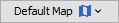

| Constellation Action | Keyboard Shortcut | User Action | Menu Icon |
|---|---|---|---|
| Open Map View | Ctrl + Shift + M | Views -> Map View |
|
The Map View provides a visualisation of geospatial data in a Constellation graph as well as features for basic geospatial analysis.
Base maps are provided by local or network tile servers, with the default map being a simple built-in map consisting only of country borders. The Map View can be extended to source its base map data from a custom location (refer to the Developer Guide for more information on how to do this). You can switch between available base maps using the  menu.
Layers can be rendered on top of the map in order to provide additional visualisations for analytic purposes.
Layers can be switched on and off using the  menu.
menu.
Overlays can be rendered on top of the map in order to provide additional information or features to the Map View. Overlays can be switched on and off using the menu.
You can zoom to markers or custom locations on the map using the menu.
The Map View is capable of rendering points, lines, polygons and multi-polygons to represent geospatial data on a graph. By default, it will read from the "Geo.Latitude" and "Geo.Longitude" attributes for point data, and the "Geo.Shape" attribute for line, polygon and multi-polygon data, where it will expect to find a GeoJSON object representing the shape as a Feature Collection. The Map View can also render clusters (calculated using marker centroids). All of these marker types can be switched on and off using the menu.
You customise markers with colours and labels using data on the graph. This can be achieved by selecting options in the and menus.
Geospatial data can be exported to a range of open data formats using the menu.